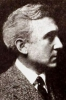

Country:United States, 52 minutes
Spoken languages:English
Genres:Action, Western
Director(s):Robert N. Bradbury
Writer(s):Robert N. Bradbury
Video Codec:Unknown
Number: 180


Certification:NR
Storyline:
When John Mason's father is killed, John is wounded. Attracted to his nurse Alice, a conflict arises between him and his friend Ben who plans to marry Alice. John later finds the killer of his father but goes to face him not knowing Ben has removed the bullets from his gun.
Cast: 


Medium: VHS tape,
Comments: Part of: John Wayne Western Collection Volume I
Loaned: No
Aspect ratio: Unknown